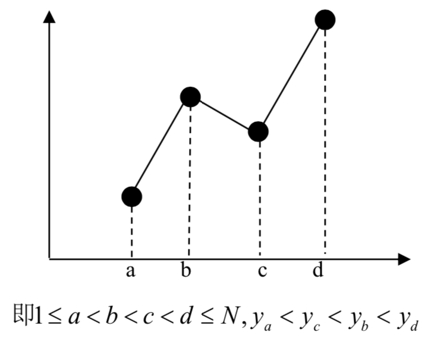
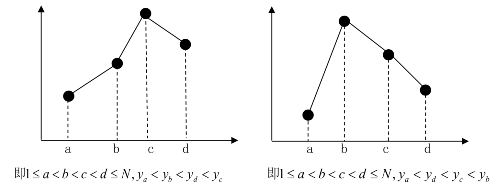

在完成了古越州圆盘密码的研究之后，考古学家小布来到了南美大陆的西部。相传很久以前在这片土地上生活着两个部落，一个部落崇拜闪电，另一个部落崇拜高山，他们分别用闪电和山峰的形状作为各自部落的图腾。
小布的团队在山洞里发现了一幅巨大的壁画，壁画上被标记出了 $N$ 个点，经测量发现这 $N$ 个点的水平位置和竖直位置是两两不同的。小布认为这幅壁画所包含的信息仅与这 $N$ 个点的相对位置有关，因此不妨设坐标分别为 $(1, y_1) , (2, y_2), ..., (n, y_n)$，其中 $y_1$ ~ $y_n$ 是 $1$ ~ $N$ 的一个排列。
小布的团队打算研究在这幅壁画中包含着多少个图腾，其中闪电图腾的定义图示如下（图腾的形式只与 4 个纵坐标值的相对大小排列顺序有关）：

崇拜高山的部落有两个氏族，因而山峰图腾有如下两种形式，左边为 A 类，右边为 B 类（同样，图腾的形式也都只与 4 个纵坐标值的大小排列顺序有关）：

小布的团队希望知道，这 $N$ 个点中两个部落图腾数目的差值。因此在本题中，你需要帮助小布的团队编写一个程序，计算闪电图腾数目减去山峰图腾数目的值，由于该值可能绝对值较大，本题中只需输出该值对 $16777216$ 的余数（注意余数必为正值，例如 $-1$ 对 $16777216$ 的余数为 $16777215$）。
 Comet OJ
Comet OJ